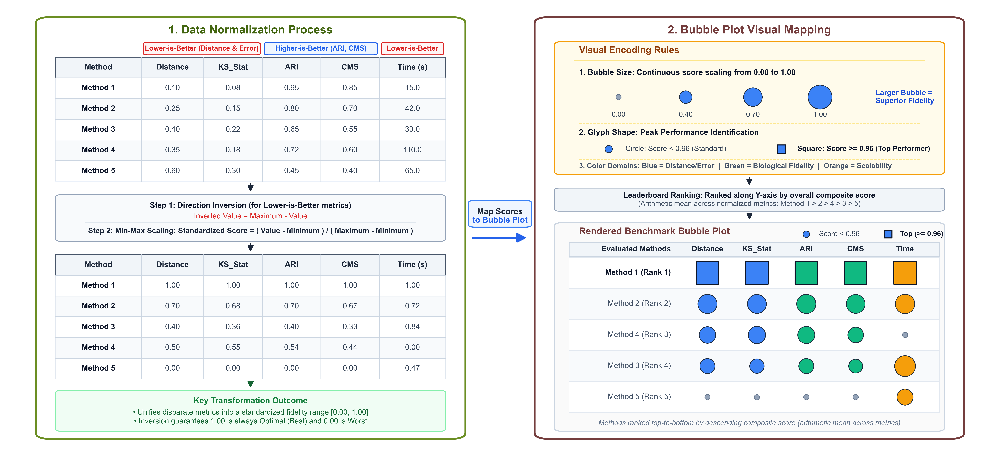

scSimEval: Unified Benchmarking and Accuracy Evaluation for Single-Cell Multiomics Simulation Methods


scSimEval is a unified evaluation and benchmarking toolkit designed to assess how realistically synthetic data generated by single-cell simulation methods match empirical experiments.
The package is primarily optimized for: * scRNA-seq (Single-Cell RNA Sequencing count matrices) * scATAC-seq (Single-Cell ATAC Sequencing peak accessibility matrices) * Paired Multiomics (Simultaneous scRNA-seq + scATAC-seq across identical cells)
Data Modalities & Extensibility: While
scSimEvalis primarily optimized and demonstrated for scRNA-seq, scATAC-seq, and paired multiomics, all evaluation measures operate on standard numeric count or continuous matrices. Consequently, the benchmarking framework can be readily extended to other single-cell data modalities, including CITE-seq surface protein counts, single-cell DNA methylation levels, and spatial transcriptomics.
Key Highlights
- Zero External Ground Truth Required: Operates directly on the empirical reference matrices and simulated matrices you already have.
- 62 Evaluation Measures Across 8 Canonical Categories: Comprehensively evaluates distributions, zero counts, cell clustering, batch mixing, marker genes, developmental lineages, cross-modal coupling, and runtime/RAM scalability.
- Automated Two-Step Score Normalization: Automatically inverts lower-is-better metrics (error, distance, runtime) and scales all criteria from to for fair comparison.
- High-Resolution Visualizations (600 DPI): Multi-dimensional bubble matrices, executive summary horizontal bar charts, 14-panel distribution QC plots, raw score heatmaps, PCA biplots, and MDS ordinations.
- Embedded Shiny Studio: Interactive graphical interface to explore benchmark results and export 600 DPI figures without coding.
Installation
You can install scSimEval directly from GitHub:
# Install devtools if not already installed
if (!requireNamespace("devtools", quietly = TRUE)) {
install.packages("devtools")
}
# Install scSimEval from GitHub
devtools::install_github("kabilanbio/scSimEval")To view the included vignette during installation:
devtools::install_github("kabilanbio/scSimEval", build_vignettes = TRUE)Workflow Architecture

The evaluation process follows four simple steps:
Step 1: Input Real and Simulated Data
Provide your real experimental reference and simulated count matrices (ref_rna, sim_rna, ref_atac, sim_atac), along with cell type labels (cell_types), batch labels (batch_info), and computer resource records (runtime in seconds and peak RAM in MiB).
Step 2: Calculate Evaluation Measures
scSimEval calculates 62 evaluation measures across 8 core categories without needing any artificial ground truth.
Step 3: Run the Complete Benchmark
Execute the complete evaluation in a single command using evaluate_simulation_accuracy(), evaluate_multiomics_accuracy(), or evaluate_multiple_datasets().
The 8 Evaluation Categories
scSimEval organizes 62 evaluation measures into eight foundational categories:
Category 1: Distribution Properties (14 metrics) — Compares single-cell count distributions (such as library size, average expression, gene variance, and zero fraction) and data manifolds between real and simulated data using statistical distance measures (Kolmogorov-Smirnov, Wasserstein, Median Absolute Deviation, RMSE, Density Overlap, Bhattacharyya distance, ECDF area, Runs test, Maximum Mean Discrepancy, and Fréchet distance).
Category 2: Correlations and Zero Patterns (8 metrics) — Checks biological variation, dropout curves, cell-to-cell correlations, and gene-gene co-expression relationships.
Category 3: Cell Structure and Clustering (9 metrics) — Evaluates whether simulated data preserves distinct cell types in unsupervised clustering (Silhouette width, Dunn index, Davies-Bouldin, Calinski-Harabasz) and supervised group matching (Adjusted Rand Index, Normalized Mutual Information, -measure, Neighborhood Purity, and Hungarian matching accuracy).
Category 4: Batch Effects and Technical Confounders (6 metrics) — Tests whether technical batch differences are well-mixed without erasing true biological differences (CellMixS, batch Shannon entropy, Principal Component Regression , Seurat mixing metric, LISI, and cross-batch cell prediction accuracy).
Category 5: Marker Genes and Biological Signals (15 metrics) — Assesses differentially expressed gene (DEG) fidelity across three established benchmarking frameworks: Simpipe, SimBench, and Shaky Foundations (effect size errors, fold-change correlations, top-marker overlap, and cell classification accuracy).
Category 6: Trajectory and Lineage Dynamics (2 metrics) — Evaluates developmental timelines (pseudotime rank correlation) and cell lineage tree branching (branch height RMSE), inferred directly from scRNA-seq counts.
Category 7: Cross-Modal Coupling and Modularity (6 metrics) — Evaluates the connection between chromatin accessibility and gene expression in multiomics data, including cell-to-cell matching (FOSCTTM, Match@1), cross-modal cell type transfer, and peak-to-gene regulatory links ( coefficient).
Category 8: Computer Resources and Scalability (2 metrics) — Measures total execution time in seconds and peak computer memory usage in MiB.
Quick Start Examples
1. Unimodal Evaluation (evaluate_simulation_accuracy)
library(scSimEval)
# Load packaged example scRNA-seq dataset
data(example_scrna)
# Evaluate unimodal accuracy on scRNA-seq
unimodal_res <- evaluate_simulation_accuracy(
ref_data = example_scrna$ref,
sim_data = example_scrna$sim,
compute_bivariate = FALSE,
verbose = FALSE
)
# Inspect library size statistical distance metrics
head(subset(unimodal_res$metrics_summary_table, Property == "library_size"))2. Multiomics Benchmarking Pipeline (evaluate_multiomics_accuracy)
# Load packaged multiomics dataset (paired RNA + ATAC)
data(example_multiomics)
# Execute master benchmark across all categories
master_eval <- evaluate_multiomics_accuracy(
ref_multi = example_multiomics$ref_multi,
sim_multi = example_multiomics$sim_multi,
cell_types = example_multiomics$cell_types,
batch_info = example_multiomics$batch_info,
cpu_time = example_multiomics$resource_stats$cpu_time,
memory_mb = example_multiomics$resource_stats$memory_mb,
verbose = FALSE
)
# View tidy master summary table
head(master_eval$benchmark_summary_table)3. Multi-Dataset / Multi-Method Consolidated Benchmarking (evaluate_multiple_datasets)
# Benchmark an arbitrary collection of datasets simultaneously
dataset_collection <- list(
"Method 1-scRNA-seq" = list(ref = example_scrna$ref, sim = example_scrna$sim),
"Method 1-scATAC-seq" = list(ref = example_scatac$ref, sim = example_scatac$sim),
"Method 2-scRNA-seq" = list(ref = example_scrna$ref, sim = example_scrna$sim),
"Method 2-scATAC-seq" = list(ref = example_scatac$ref, sim = example_scatac$sim)
)
consolidated <- evaluate_multiple_datasets(
datasets = dataset_collection,
pair_by_prefix = TRUE,
compute_bivariate = FALSE,
verbose = FALSE
)
# View dataset overview table
print(consolidated$dataset_overview)Score Normalization in Benchmark Bubble Plots

To ensure fair comparison across metrics with different units and directions:
Direction Inversion (Lower-is-Better Metrics): Metrics where smaller numbers denote superior fidelity (such as KS distance, Wasserstein distance, RMSE, and runtime) are inverted: This ensures that larger values always denote superior quality across every measure.
Min-Max Scaling ( to ): All metrics are rescaled to a standard range:
-
Visual Mapping Rules:
- Bubble Size: Directly proportional to the standardized score ( to ). Larger bubbles indicate higher simulation quality.
- Glyph Shape: Top-performing tools () are highlighted with bold squares, while standard scores are shown as circles.
- Category Colors: Distinct color for each evaluation category.
- Leaderboard Ranking: Simulation methods are ordered top-to-bottom on the vertical axis by composite average score.
Visualization Suite (600 DPI)
scSimEval provides built-in plotting functions rendering high-resolution figures at 600 DPI:
-
Flagship Bubble Matrix (
plot_benchmark_bubble_matrix): Multi-tier bubble matrix across the 8 evaluation categories. -
Evaluation Summary Bars (
plot_evaluation_summary): Horizontal bar matrix ranking simulators with multi-panel category scores. -
Comparative Distribution QC (
plot_distribution_qc): 14-panel density and bivariate distribution comparison layout. -
Metric Comparison Boxplots (
plot_metric_boxplots): Standardized or raw score boxplots with jittered data points. -
Computational Scalability Suite (
plot_scalability_benchmark): 6-panel scalability dashboard (runtime, RAM, Pareto frontier, throughput). -
Metric Heatmap (
plot_metric_heatmap): Method-by-metric grid displaying exact unnormalized raw scores in bold text. -
PCA Biplot & MDS Ordination (
plot_metric_pca,plot_metric_mds): Dimension reduction of simulator metric profiles.
# 1. Master benchmark bubble matrix
plot_benchmark_bubble_matrix(
data = consolidated,
method_classes = list("Multiomics" = c("Method 1", "Method 2")),
title = "Benchmark Overview: Single-Cell Simulation Fidelity"
)
# 2. Evaluation summary horizontal bar matrix
plot_evaluation_summary(data = consolidated)
# 3. 14-panel distribution QC plot
plot_distribution_qc(ref_data = example_scrna$ref, sim_data = example_scrna$sim)
# 4. Computational scalability dashboard
plot_scalability_benchmark(scalability_data = consolidated, mode = "composite", panels = "6panel")Interactive Web Application (Shiny Studio)
Launch the interactive Shiny web application to explore benchmark metrics, adjust category weighting, and view visualizations directly in your browser:
library(scSimEval)
# Launch in your default web browser
launch_scSimEval_app()Authors & Maintainers
scSimEval is developed and maintained by:
Kabilan S (Ph.D Student and Maintainer, ICAR-IASRI) —
kabilan151414@gmail.comDr. Dwijesh Chandra Mishra (Author & Thesis Guide, ICAR-IASRI) —
dwij.mishra@gmail.comDr. Shashi Bhushan Lal (Author, ICAR-IASRI) —
sblall16@gmail.comDr. Sudhir Srivastava (Author, ICAR-IASRI) —
sudhir0401bm@gmail.comDr. Krishna Kumar Chaturvedi (Author, ICAR-IASRI) —
kkcchaturvedi@gmail.comDr. Sharanbasappa (Contributor, ICAR-IASRI) —
smadival509@gmail.comGitHub Repository: https://github.com/kabilanbio/scSimEval
Bug Reports & Issues: https://github.com/kabilanbio/scSimEval/issues